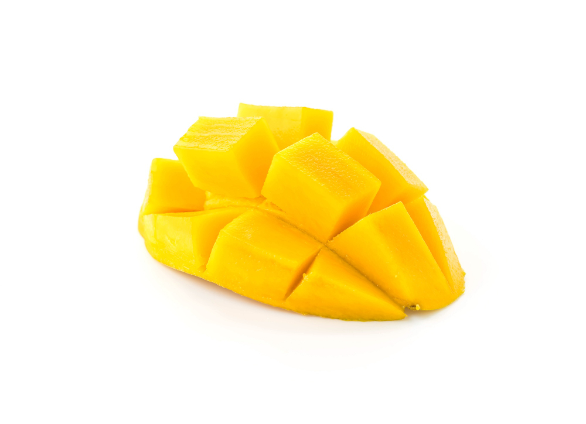

Click on the buttons below to see what happens to the canvas!
//Explains to the user what they need to do to the website.The following code has been developed by students and/or researchers of the Freshman Research Initiative DIY Diagnostics Stream at The University of Texas at Austin. This code is shared for demonstration purposes and should not be considered a product -- it is for entertainment purposes only. Any user of this code does so at their own risk. Members of the DIY Stream, FRI, and The University of Texas system are not liable for anything related to this code.
THIS CODE SHOULD NOT BE USED TO DIAGNOSE ANY KIND OF MEDICAL CONDITION.
//creates canvas and adds a border + sizing //creates button that creates a rectangle on the canvas when clicked //creates button that draws my name on the canvas when clicked  //adds image to website & sizes image //creates button that loads image onto canvas when clicked //creates button that clears the canvas when clicked